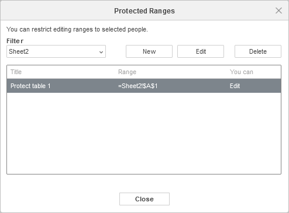
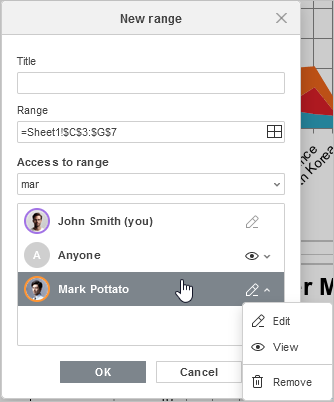

Zaštita opsega
Opcija Protect Range omogućava vam da odredite opsege ćelija koje ne mogu da uređuju korisnici bez odgovarajućih prava za uređivanje, koja dodeljuje kreator fajla ili korisnik sa punim pristupom.
Da biste izabrali opseg zaključanih ćelija koje će korisnik moći da menja:
-
Kliknite na dugme Protect Range na gornjoj alatnoj traci kartice Protection. Otvoriće se prozor Protected Ranges.

- Koristite padajuću listu Filter da biste izabrali željeni list. Kliknite na dugme New u prozoru Protected Ranges da biste izabrali i dodali opseg ćelija koje će korisnik moći da uređuje.
-
U prozoru New Range unesite Title opsega i izaberite opseg ćelija klikom na dugme Select Range. Izaberite korisnike kojima želite da omogućite pristup opsegu, podesite njihova prava pristupa i kliknite na OK da biste potvrdili.

Dostupna prava pristupa su Edit i View. - Da biste izmenili ili obrisali opseg, izaberite ga u prozoru Protected Ranges i kliknite na dugme Edit ili Delete u skladu sa potrebom.
- Kliknite na dugme Close u prozoru Protected Ranges kada završite.
Da biste saznali više o omogućavanju korisnicima da uređuju opsege, pogledajte sledeći članak.